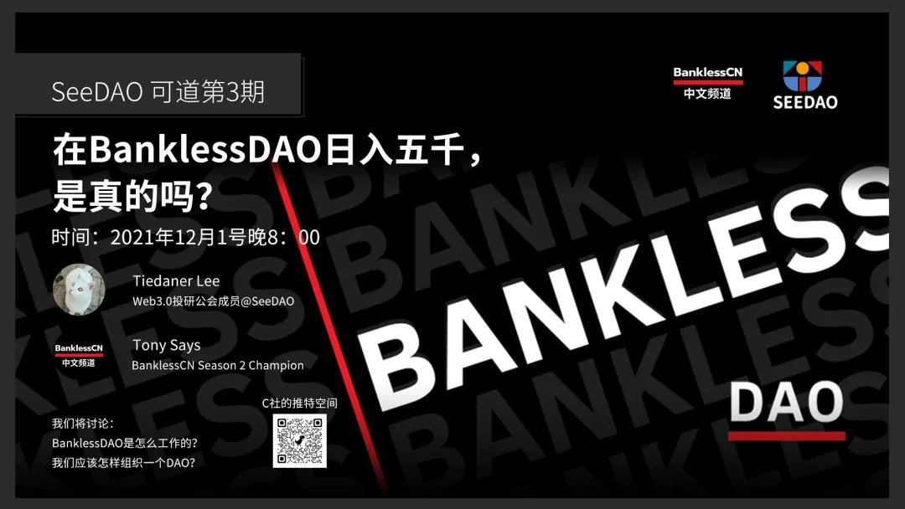

2021年5 月 4 日，区块链媒体Bankless 宣布推出去中心化自治组织 Bankless DAO，并推出该 DAO 的治理代币 $BANK。其中的30% 将追溯性分配给之前Bankless的支持者，30% 属于项目的财库、40% 将以 3 年时间线型归属于财库。
Bankless DAO甫一推出，便引发了全球媒体的关注。这是全球第一个将自己去中心化的媒体，也是第一个很好地组合了Notion、Discord、Snapshot等Web2.0和Web3.0协作工具的DAO。
Bankless DAO将工作开放给社区，凡是完成工作并通过验收的人能够获得系统代币。根据最新数据显示，Bankless DAO内的时薪超过了600元。按照一天八小时工作制结算，工作者可日入5000元。
自Bankless DAO推出后，有不少团体都效仿了Bankless的做法，一批DAO如雨后春笋般涌出。Bankless给DAO带来了示范作用和积极影响是毋庸置疑的。
12月1日晚上8点，CryptoC_Labs的推特空间将发起会议，专门讨论“Bankless DAO”。会议的发起人有 SeeDAO Web3.0投研公会成员@Tiedaner Lee，以及Bankless CN社区的KOL Tony Says。会议发起者希望讨论：BanklessDAO是怎么工作的？我们应该怎样组织一个DAO？
欢迎对Bankless DAO以及DAO的组织方式感兴趣的朋友共同参与！
